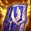

Toujours commencer par les bottes pour ce build pour la mobilité
Plated pour des compos AD, Mercury pour des compos AP ou CC et Swiftness
si tu te retrouves en grande position de force

Le Mythic : Evenshroud normalement
sinon Frostfire pour plus de tankiness (matchup perdant) et du slow
ou Iron solary pour shield les alliés si trop de burst chez les ennemis


Le Mythic : Evenshroud normalement
sinon Frostfire pour plus de tankiness (matchup perdant) et du slow
ou Iron solary pour shield les alliés si trop de burst chez les ennemis